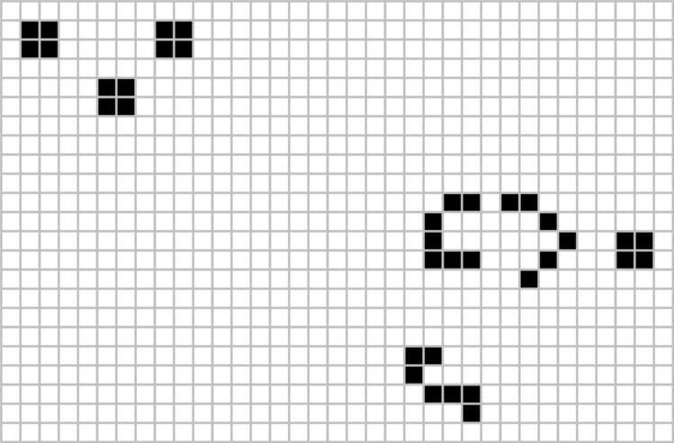

Conway's Game of Life
The Game of Life, also known simply as Life, is a cellular automaton devised by the British mathematician John Horton Conway in 1970. It is a zero-player game, meaning that its evolution is determined by its initial state, requiring no further input. One interacts with the Game of Life by creating an initial configuration and observing how it evolves. It is Turing complete and can simulate a universal constructor or any other Turing machine.
The universe of the Game of Life is an infinite, two-dimensional orthogonal grid of square cells, each of which is in one of two possible states, live or dead. Every cell interacts with its eight neighbours, which are the cells that are horizontally, vertically, or diagonally adjacent.
At each step in time, the following transitions occur:
- Any live cell with fewer than two live neighbours dies, as if by underpopulation
- Any live cell with two or three live neighbours lives on to the next generation
- Any live cell with more than three live neighbours dies, as if by overpopulation
- Any dead cell with exactly three live neighbours becomes a live cell, as if by reproduction
- Any live cell with two or three live neighbours survives
- Any dead cell with three live neighbours becomes a live cell
- All other live cells die in the next generation. Similarly, all other dead cells stay dead